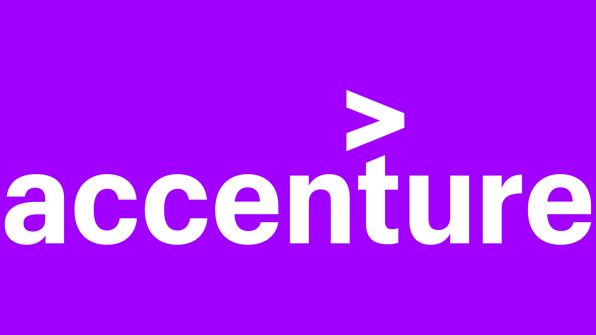

I completed a project on Blinkit India's Last Minute App, where I learned essential skills such as data understanding, data modeling, and data cleaning using SQL. The project involved analyzing customer behaviors and sales trends, with a focus on optimizing order patterns and delivery times. I applied data cleaning techniques to ensure data accuracy and used data modeling to structure the data for deeper analysis. I also created interactive dashboards in Power BI, showcasing key insights like peak ordering times and popular products. This project helped me improve my ability to extract and interpret data for business decision-making and operational efficiency.

I have completed Internship and Career Essentials in Data Analysis by Microsoft and earned a certification. During this course, I learned key skills in data analysis, data visualization, and data analytics, which have strengthened my ability to work with data and extract valuable insights.

I completed a job simulation in Power BI with PwC, earning a certificate. Through this, I learned how to understand clients' data visualization needs, demonstrated expertise in creating Power BI visuals, and improved communication with engagement partners for effective collaboration.

I completed a job simulation in Data Analytics with Accenture, earning a certificate. I gained skills in Excel, SQL, and Power BI, along with valuable experience in data cleaning, data visualization, communication, bi visuals, presentaion, sql qureys, data cleaning and data understanding

I completed a course on LinkedIn Learning titled "Introduction to Career Skills in Data Analytics" and earned a certificate. In this course, I gained skills in data analytics, tech career skills, communication, and presentation, enhancing my overall professional abilities.
.jpg)